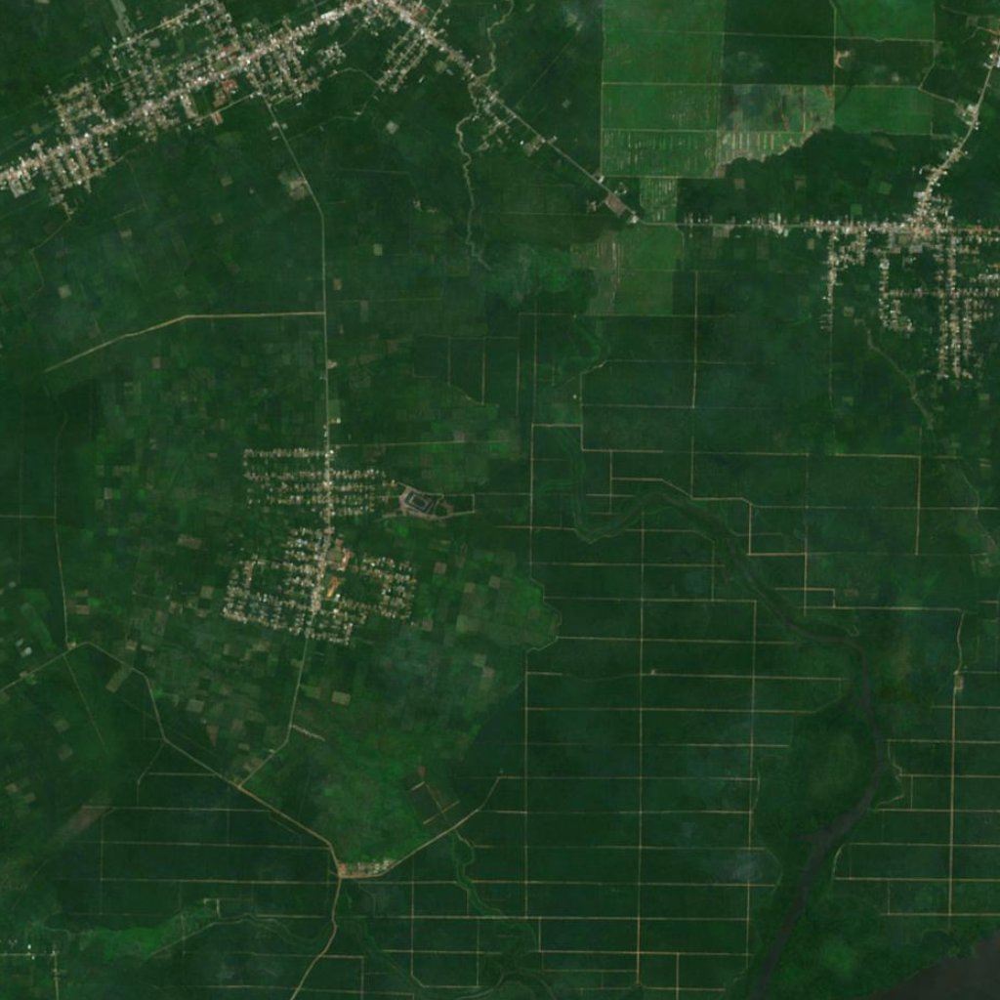
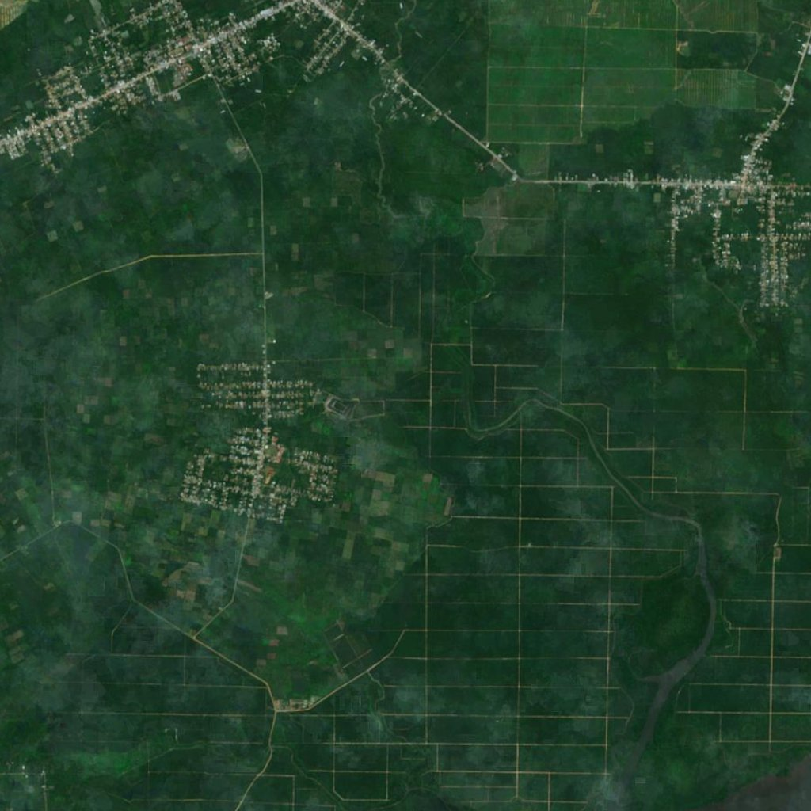
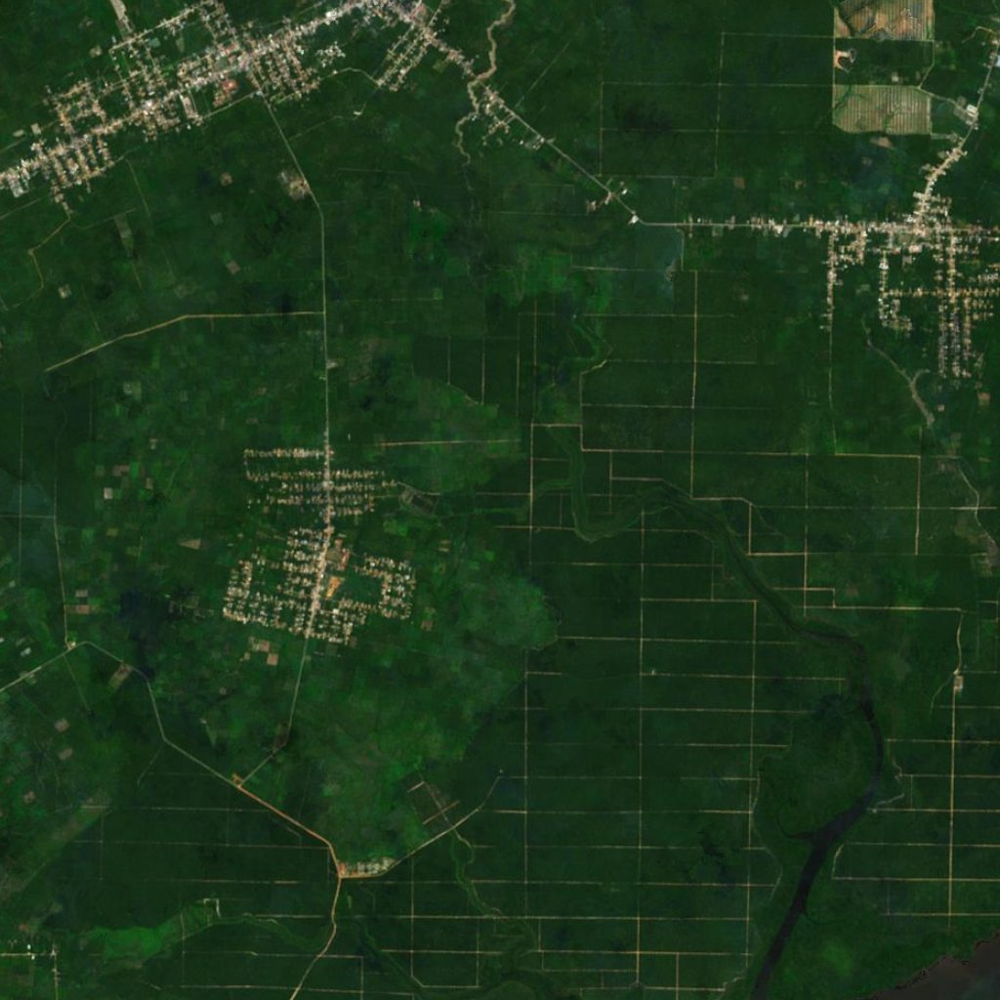
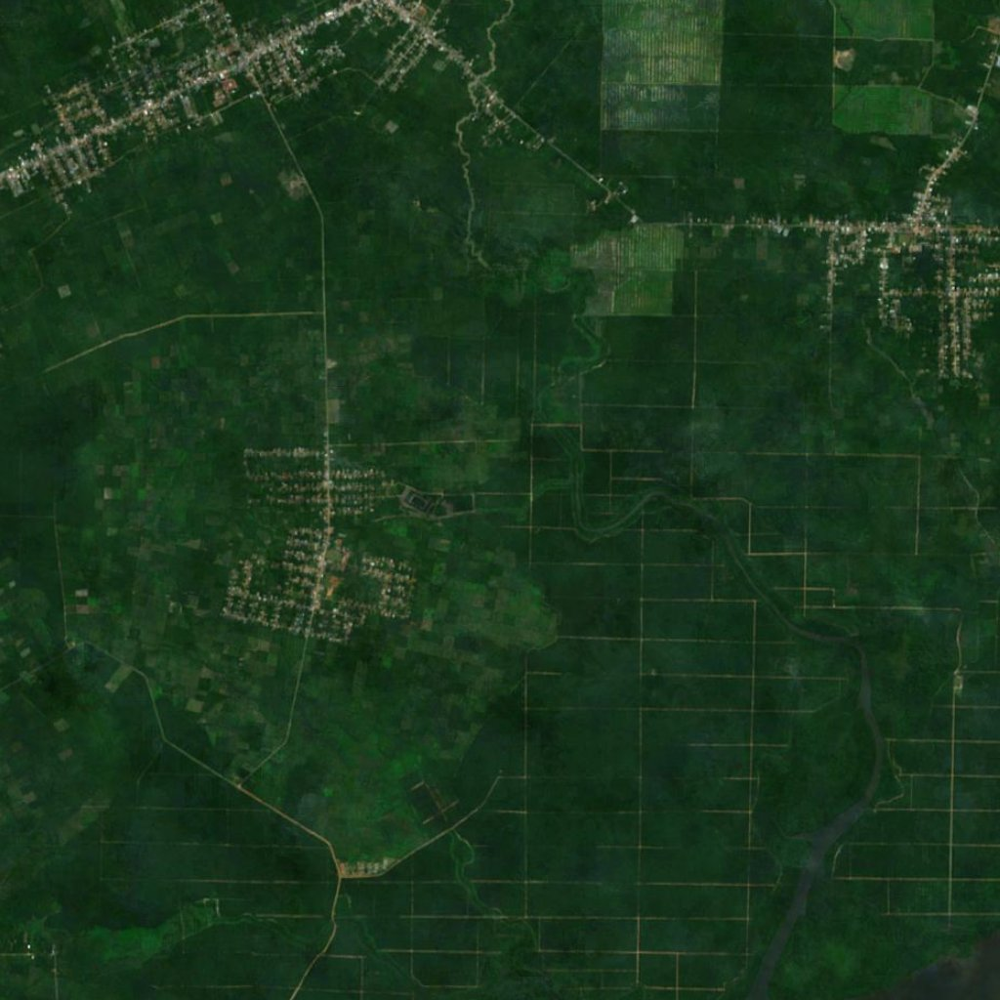
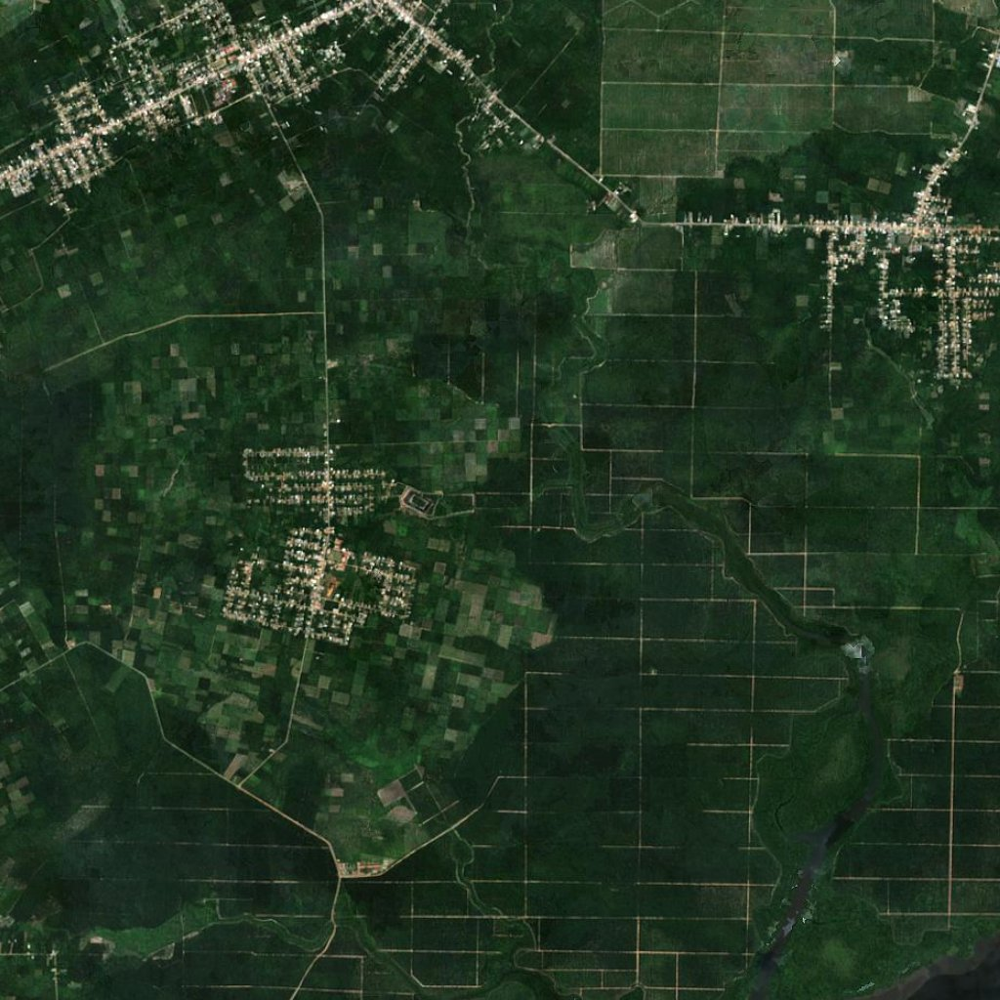
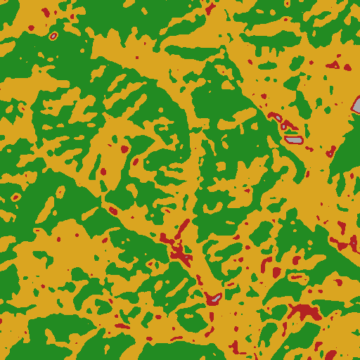
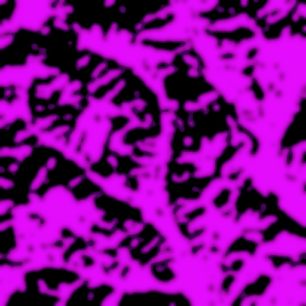

EcoGuard× 하나은행 임베디드 그린파이낸스
08 — SATELLITE VERIFICATION
제 5.3 장 위성 검증 — Sentinel-2 시계열 분석
위성은 위조할 수 없습니다
기존 검증(현장 감사·FSC·GPS 자기신고)은 모두 사람이 작성하는 문서에 의존합니다. EcoGuard는 ESA Sentinel-2(10m, 5일 주기)로 GPS polygon 영역을 2019년부터 시계열로 자동 분석합니다. 결과는 SHA-256 블록체인으로 기록되어 위변조 불가.
Sentinel-2 시계열 (2019~2024) — Central Kalimantan, Indonesia

2019
2020
2021
2022
2023 2024
2024U-Net 분할 + Grad-CAM 판단 근거

U-Net Segmentation (산림/농지/나지)

Grad-CAM 판단 근거 시각화
U-Net으로 픽셀 단위 분할, Grad-CAM으로 "AI가 어디를 근거로 판단했는지"를 EU 감사관에게 시각적으로 제시 가능. 구름이 있는 영상은 SAR(합성개구레이더)로 보완.
분석 결과 — 정량 수치
| 대상 | CPO 2,400MT · Central Kalimantan |
| 좌표 | 2.50°S, 111.79°E (polygon) |
| Forest 2019 → 2024 | 78% → 47% (−31%p) |
| NDVI 2020 → 2024 | 0.71 → 0.50 (임계 0.6 하회) |
| EUDR Cutoff 대조 | 2021.03 산림전용 식별 |
| 최종 판정 | HIGH RISK |
| 기록 | SHA-256 블록체인 타임스탬프 |
왜 이게 핵심인가: 이 판정 결과 그대로가 은행 ESG 우대대출 심사의 객관 데이터가 됩니다. 위성이 "검증 가능한 진실"을 만들고, 그 위에서 금융이 작동합니다.
EcoGuard × 하나은행 — 임베디드 그린파이낸스09